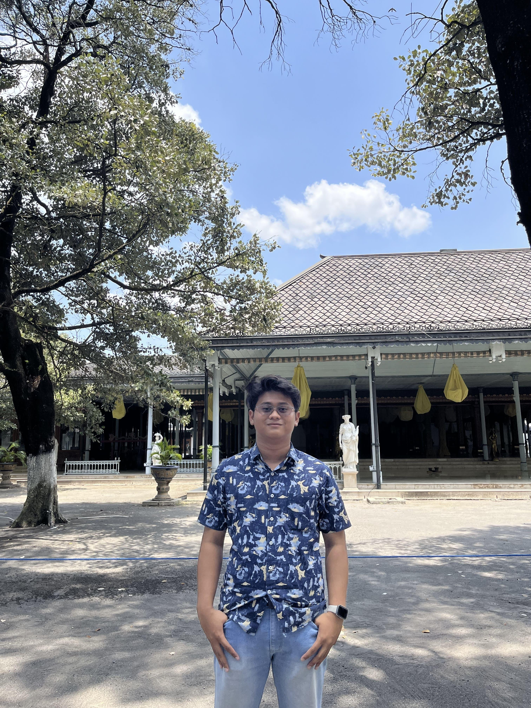

I'm an Informatics undergraduate student at Muhammadiyah University of Surakarta with a strong interest in web development, particularly in Frontend Development and UI/UX Design. As a beginner who is continuously learning, I’m passionate about creating interactive and user-friendly interfaces using modern web technologies.
View My WorkA web application designed to help companies monitor employee attendance, manage leave and permit data, and generate attendance reports automatically and efficiently.
View Design"Laukita" is a catering application design designed to make it easier for users to order food according to their needs. This application design also allows customers to choose a menu according to category, as well as customize orders based on user preferences.
View DesignA web application designed to help companies monitor employee attendance, manage leave and permit data, and generate attendance reports automatically and efficiently.
View DesignRe-Design of the myPresensi Platform, an attendance application from Muhammadiyah University of Surakarta, which contains student and lecturer attendance, as well as access to courses and learning schedules.
View DesignIftar Countdown is a simple web application that calculates the time to break the fast based on the user's location. The application automatically detects the user's location and displays the time to break the fast (Maghrib) according to the local time zone.
View Source CodeA web-based system developed to digitize the attendance process of student organization activities, especially in the Student Association environment. This project aims to replace the manual attendance system (signatures on paper) with a QR Code system that is more efficient, transparent, and well-documented.
PrivateThis website is a simple donation management system built using PHP Native and MySQL as a database. This application allows users to manage donation data for underprivileged children, including features to add, edit, delete, and view a list of donations that have been received. With a simple and functional design, this system is suitable for use in social projects or as a learning tool in developing web-based applications using PHP Native and MySQL.
View Source CodeIn this project, I was assigned to create a profile page for the needs of the Informatics Engineering Student Association's work program. In this assignment, I worked on the Front End. In this project I used a little animation with the Java Script programming language. The use of Java Script in this project is used so that the display of the profile page photo can run automatically.
Private
I am an undergraduate Informatics student at Muhammadiyah University of Surakarta with a strong interest in web development, particularly in Frontend Development and UI/UX Design. As a beginner who is eager to learn, I am passionate about creating interactive and user-friendly interfaces using modern web technologies. Born in Kudus in May 2005, I am known as a disciplined, honest, confident, and goal-oriented individual. I am also persistent and possess strong communication and public speaking skills, which support my ability to work both independently and in a team. Currently, I am seeking an internship opportunity to further develop my skills and gain real-world experience.
Leading the planning and implementation of scientific work programs, such as studies, HIMATIF Learning Center, and Research. Collaborating with members of the Informatics Engineering Association in research activities and web-based software development. Becoming an Advisor and collaborating in the design of payment system research at an Islamic boarding school located in Ketitang, Boyolali.
This activity aims to help students understand the basic concepts of algorithms and programming. In addition, this event also provides support in carrying out practical assignments and projects related to programming. During the practicum, we help solve technical problems faced by students, such as code debugging and error handling. In addition, we also prepare and manage practicum materials, which include modules, questions, and examples of programming code to support a more effective learning proces.
As a Scientific and Research Staff at HIMATIF UMS. I am responsible for facilitating academic forums and encouraging students' potential in scientific research in the field of Information Technology. My main focus is to develop a research culture and design innovation, to create an environment for students to explore their research interests. Through a collaborative and educational approach, I strive to create a supportive environment for students in developing their interests and sharing their knowledge, skills, and ideas in research.
As a Research and Technology Staff at FOSTI UMS, I am responsible for facilitating academic forums to encourage students' potential in information technology. My focus is to develop a desire to continue to learn about the use of various programming languages in information technology.
As a resource person in the Informatics Student Association Podcast, my partner and I discussed the importance of financial management for students. In this session, we explained various strategies for earning income during college and how to manage finances, especially for students who live in boarding houses.
Conducting a discussion of last year's midterm exam questions in the calculus course before the midterm exam.